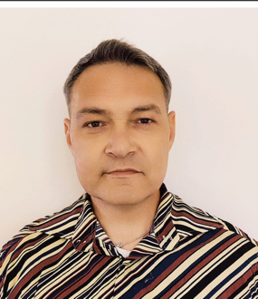

Goal-oriented, detail-driven, and ready for new challenges in IT. Focused on ensuring software quality and continuous professional growth.
Completed 320 hours of QA internship at IDCanopy, a tech company, providing hands-on experience in software testing. I actively combine practical field knowledge with intensive theoretical learning to deliver high-quality results.
Successfully completed 320 hours of hands-on experience in an Agile environment. Set up and managed testing processes using Scrum and Kanban boards in Jira.
Strukturiertes QA-Dashboard zur Verfolgung von Bug Tracking und Test-Artefakten.
Let's connect! I am open to professional networking and career opportunities.
Kaltenkirchen, Deutschland